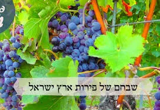

ראוי לאדם לעשות פעולות ומעשים שיגרמו לו להרגיש את כבוד ארץ ישראל.
כמו שכתב החינוך (מצווה תקסח) בטעם המצווה: שלא להחזיר עבד שברח מאדוניו מחוצה לארץ לארץ ישראל. משרשי המצוה מה שזכרנו שרצה האל לכבוד הארץ שהבורח לשם ינצל מעבדות, כדי שנתן אל לבנו כבוד המקום ונקבע בלבבנו בהיותנו שם יראת השם יתעלה. וכל זה להועיל לעמו ולזכותם כי חפץ חסד הוא.
כתב הרמב"ם (מגילה א): כל מדינה שהיתה מוקפת חומה בימי יהושע בן נון קורין בחמשה עשר באדר... ולמה תלו הדבר בימי יהושע כדי לחלוק כבוד לארץ ישראל שהיתה חרבה באותו הזמן, כדי שיהיו קוראין כבני שושן ויחשבו כאילו הן כרכין המוקפין חומה אף על פי שהן עתה חרבין הואיל והיו מוקפין בימי יהושע ויהיה זכרון לארץ ישראל בנס זה.
על פירות האילן מברך 'בורא פרי העץ', ולאחריהן מברכים 'בורא נפשות רבות', חוץ מהפירות שנשתבחה בהן ארץ ישראל שמברכין עליהן ברכה אחת מעין שלש, והטעם, לחלוק כבוד לארץ ישראל, כי הוא מעין כל הברכות, ותקנו ברכה זו כנגדה לכבודה (של"ה אות הקו"ף - קדושת האכילה).
כתב בצרור המור (ויקרא פרשת בהר): סמך שמיטת הארץ לענין של מעלה (להזהר בכבוד ה'). להורות לנו כי כמו שאנו חייבים בכבוד הש"י וכבוד הבריות. כן אנו חייבים בכבוד הארץ הקדושה. היא ארץ ישראל אשר תמיד הש"י דורש אותה. ועיני ה' בה מראשית השנה ועד אחרית השנה. לפי שהיא נקראת ארץ חפץ וארץ החיים. ולכן אנו חייבים לשקול אלו הג' מיני כבוד. כבוד השי"ת. וכבוד ישראל. וכבוד ארץ ישראל. והם כלולים בכבוד השי"ת. ולכן אנו כותבים באות ש' ג' יודין לרמוז שהכל דבר אחד. היו"ד הראשונה יו"ד השם. והיו"ד השנית היא יו"ד ישראל. והיו"ד השלישית היא יו"ד ארץ ישראל שהיא יו"ד ירושלם. |

מכירה פומבית של זכויות
מסופר על הרב מרדכי אליהו זצ"ל, פעם הוא נסע להשתתף בכנס בחוץ לארץ שישבו בו שועי עולם, רבנים ונגידים, מנהיגי קהילות ובעלי השפעה. הגישו יין לשולחן ואמרו לרב: "מנהגנו, שאורח הכבוד מברך תחילה על היין ולאחר מכן מוזגים לכל המסובים". הביט הרב בבקבוק וראה שהיין מיוצר בחוץ לארץ וסירב לשתות.
"איני שותה יין שאינו של ארץ ישראל", אמר, והסביר: "ביין של ארץ ישראל קיימו כמה וכמה מצוות התלויות בארץ, ומלבד זאת הענבים שגדלו באדמת ארץ ישראל - יש בהם קדושה מיוחדת, וכבר נאמרה הלכה, שכאשר מונחים לפני האדם שני פירות, הפרי של ארץ ישראל קודם לפרי של חוץ לארץ, למרות שאינו משובח כמותו, מפני שחשיבותו גדלה בגלל המצוות הרבות הכרוכות בגידולו ובהתקנתו לאכילה".
הלך האחראי ומצא במחסן שני ארגז יין מארץ ישראל והביאו את הבקבוקים לשולחן הנשיאות.
קם הרב ממקומו ואמר: "את הזכות לשתות מהיין הזה אני רוצה למכור בין הנוכחים, ומחיר הפתיחה הוא פי עשרה מהמחיר האמיתי של היין. וכל זאת אני עושה כדי להרבות בכם חיבת ארץ ישראל". החלו העשירים מתחרים ביניהם, וכל אחד התחייב על סכום יותר גדול, ובלבד שיזכו שהרב ימזוג להם כוס יין מארץ ישראל[1].
[1]. אביהם של ישראל ח"ה עמ' 114